크림 바탕 위 남색 게임 창, 픽셀 글꼴. 강조는 빨강 낱말 하나와 창 안 금색 한 곳. 어울리는 자리: 학생 · 체험 행사, 가벼운 연수
디자인 레퍼런스
한글 문서(계획안 · 연수 강의안 · 성과 보고)를 16:9 발표 덱으로 바꿀 때 채팅 AI가 읽는 디자인 안내이자 재료입니다. 이 주소와 문서를 AI에게 주면, 여기 있는 기본 장표 23가지와 분위기 넷으로 덱을 만듭니다.
- 문서를 올립니다Claude · ChatGPT 대화창에 한글 문서(또는 PDF)를 첨부합니다. 개인정보는 지우고.
- 이 주소를 줍니다아래 문장을 붙여 넣습니다. 분위기를 정했으면 "B 분위기로"를 덧붙입니다.
- 구성안을 확인합니다AI가 장별 구성안을 먼저 보여 줍니다. 고친 뒤 "만들어 줘". 받은 .html은 → 키로 넘깁니다.
https://szxv7704-dot.github.io/design-reference-gallery/ 을(를) 읽고, 첨부한 문서를 16:9 발표 덱 HTML로 만들어 줘. 먼저 장별 구성안을 보여 줘.AI에게: 이 페이지 전체가 안내입니다. 지킬 것 → 흐름 → 기본 장표와 견본 코드 → 뼈대 순서로 읽으세요. 같은 내용의 글 파일은 guide.md, 계열 하나만 쓰는 지시서는 A · B · C · D입니다. 모든 예시 내용은 가상입니다.
분위기 넷 겉모습만 다르고 부품 이름은 같습니다. 고르면 아래 견본 그림이 그 분위기로 바뀝니다
전시관 모형대처럼 밝은 청백 무광. 주황은 한 장에 한 곳. 어울리는 자리: 어디에나 무난하다. 정하지 않았으면 이것
하늘빛 흰 바탕에 장난감 블록, 굵은 제목. 빨강 강조 한 곳. 어울리는 자리: 유아 · 초등, 밝은 분위기의 행사
백상지에 먹 명조 제목, 남색과 주홍 2도. 이중 괘선으로 지면을 짠다. 어울리는 자리: 계획안 · 정책 보고, 차분한 자리
AI가 지킬 것 사람은 읽지 않아도 됩니다
0. 당신(AI)의 일
사용자가 준 문서(한글 계획안 · 연수 강의안 · 성과 보고 등)의 내용으로 16:9 발표 덱 HTML 파일 하나를 만듭니다.
이 안내의 기본 장표(3) · 흐름(4) · 견본 코드(8)를 재료로 씁니다. 색 · 글꼴 · 부품 모양은 뼈대(6)의 두 줄이 인터넷에서 불러오므로, 당신이 쓰는 것은 <section class="slide">들뿐입니다.
1. 진행 순서
- 문서를 읽습니다. 문서가 없으면 달라고 합니다. 발표 자리(계획안 발표 · 성과 공유회 · 설명회 · 연수)와 발표 시간을 모르면 짧게 묻습니다.
- 흐름을 고릅니다(4). 문서 종류에 맞는 흐름의 자리 순서를 따르되, 문서에 없는 자리는 뺍니다.
- 문단마다 기본 장표를 고릅니다(3). 한 장에 기본 장표 하나. 내용 조건을 넘치면 장을 나눕니다.
- 분위기 계열을 정합니다(5). 사용자가 정하지 않았으면 B를 권하고 한 번 묻습니다.
- 구성안을 먼저 보여 주고 확인을 받습니다. 장마다
자리 | 기본 장표 | 제목 한 문장 | 쓸 내용(문서의 어느 부분) | 수치와 출처를 표 한 줄로. 이때 코드를 쓰지 않습니다. 사용자가 "구성 확인 없이 바로"라고 했으면 건너뜁니다. - 확인을 받으면 HTML을 만들고, 점검(9)을 거쳐 내보냅니다.
2. 반드시 지킬 것
- 문서에 없는 숫자 · 연도 · 예산 · 이름 · 출처를 지어내지 않습니다. 비어 있으면 묻거나 그 장을 뺍니다. 문서에 없는 사실을 넣고 싶으면 구성안에 '추가 사실'로 따로 적어 확인을 받습니다.
- 한 장에 기본 장표 하나. 도식 두 개가 필요하면 두 장으로 나눕니다. 글자를 줄여 한 장에 밀어 넣지 않습니다.
- 본문 장은
머리말(.kicker) + 제목(.title) + 부품순서입니다. 제목은 결론 한 문장, 두 줄 이내. "현황" 같은 이름표는 머리말에 씁니다. 한 문장 · 질문 · 할 일 장만 제목 없이 머리말 아래에 부품을 둡니다. - 수치가 있는 장에는 출처(
.src)를 씁니다. - 강조색은 한 장에 한 곳: 제목의
<em>하나 또는 부품의.is-key하나(둘 다 쓰면 같은 내용을 가리켜야 함). - 클래스는 견본 코드(8)에 나온 것만 씁니다. 없는 클래스는 모양이 없어 배치가 무너집니다. 새 부품이 꼭 필요하면 뼈대
<style>의 '추가 부품' 줄 아래에 토큰 변수(--ds-*)만으로 정의합니다. - 뼈대의 공통 파일 두 줄(
<link>·<script src>)은 주소 한 글자도 바꾸지 않습니다. 공통 CSS · 엔진을 HTML 안에 옮겨 쓰거나@font-face를 새로 쓰지 않습니다. - 장 번호 · 쪽 표시 · 점은 쓰지 않습니다. 엔진이 채웁니다(
<span class="page-no"></span>는 빈 칸 그대로). - 무대는 1920 × 1080이고 화면에 맞게 통째로 줄어듭니다. 글자 크기를 바꾸지 않습니다. 머리말과 두 줄 제목 아래 본문 높이는 약 600~680px이고 넘친 부분은 잘립니다. 넘치면 문장을 줄이거나 장을 나눕니다.
- 인라인
style은 값 전달에만 씁니다: 막대--v(가장 큰 값 = 100) · 목표선--t· 간트--from--to(1~12월) · 체계 갈래 수--n· 화면 짚기 번호 자리--x--y(%). - 그림을 코드로 그리지 않습니다. SVG · CSS · 캔버스로 사물 · 인물 · 풍경 · 캐릭터 · 지도를 그리지 마세요. 사진 · 화면 캡처는 사용자가 준 이미지를
.ph안에<img>로 넣고, 없으면<div class="ph" data-need="사진 자리 · 4:3 · 무슨 장면"></div>로 자리만 두고 무엇이 필요한지 말해 줍니다. - 누를 때마다 하나씩 보이는 장(
data-steps+data-step)은 덱 전체에서 1~3장. 같은 기본 장표가 세 장 넘게 연달아 나오지 않게 합니다.
흐름 문서 종류에 맞는 자리 순서. 자리마다 쓰는 기본 장표가 정해져 있습니다
계획안 발표 계획안 문서의 내용을 발표로 옮길 때
- 여는 장표지목차
- 추진 배경한 문장큰 숫자막대 비교추이
- 목표 · 추진 체계한 문장체계
- 세부 추진 과제묶음·분류항목둘 비교순서·단계
- 추진 일정일정
- 예산표구성비
- 기대 효과전→후항목
- 맺는 장맺음
예시 덱 12장 — 가상 내용 하나로 처음부터 끝까지 엮은 것입니다. 누르면 그 장에서 열립니다.
성과 공유회 한 해 사업의 결과를 알릴 때
예시 덱 13장 — 가상 내용 하나로 처음부터 끝까지 엮은 것입니다. 누르면 그 장에서 열립니다.


사업 설명회 지원 사업을 안내하고 신청을 받을 때
예시 덱은 아직 없습니다. 위 자리 순서대로 기본 장표를 엮습니다.
연수 한 차시 교직원 연수 · 강의 한 차시
예시 덱 16장 — 가상 내용 하나로 처음부터 끝까지 엮은 것입니다. 누르면 그 장에서 열립니다.
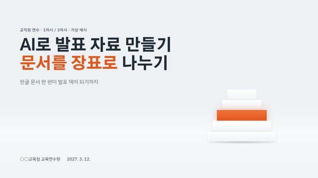
1. 표지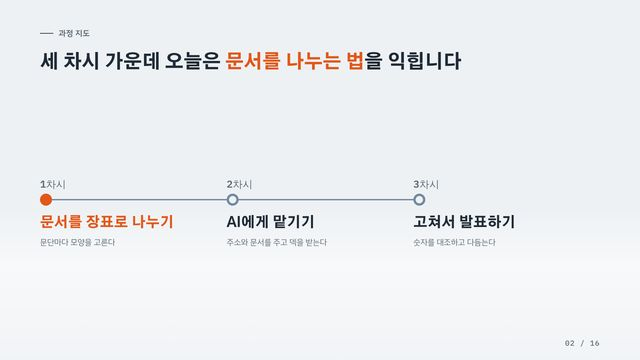
2. 일정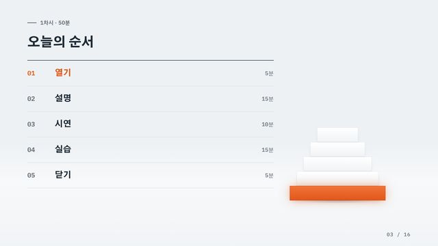
3. 목차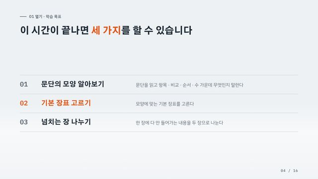
4. 항목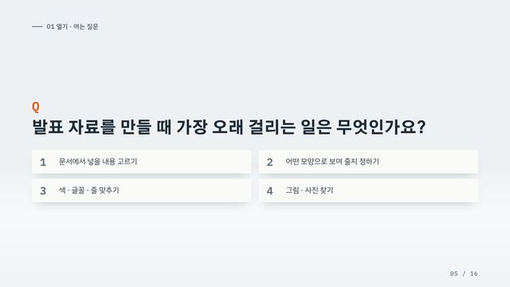
5. 질문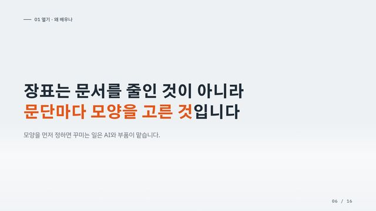
6. 한 문장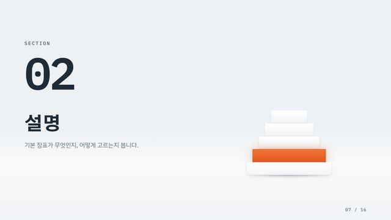
7. 간지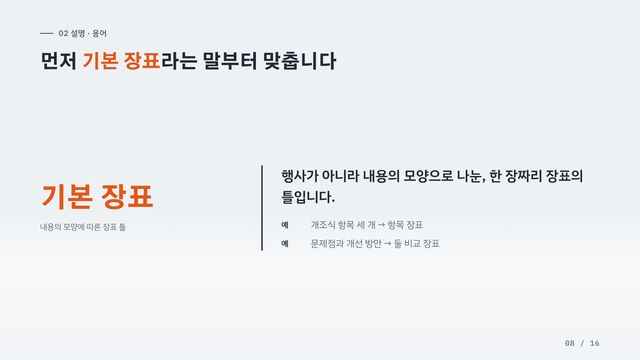
8. 용어 정의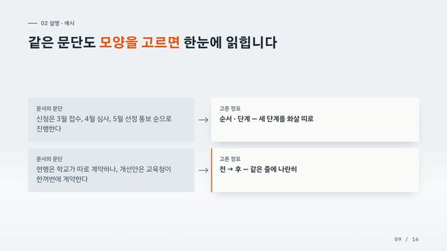
9. 둘 비교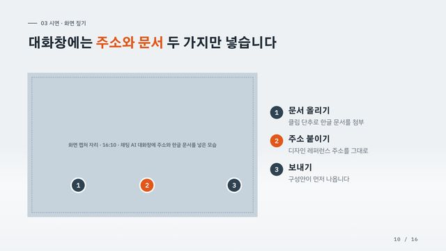
10. 화면 짚기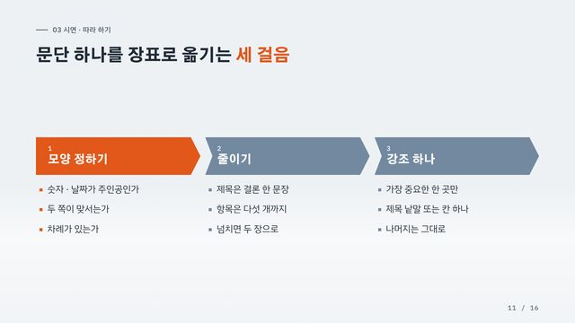
11. 순서·단계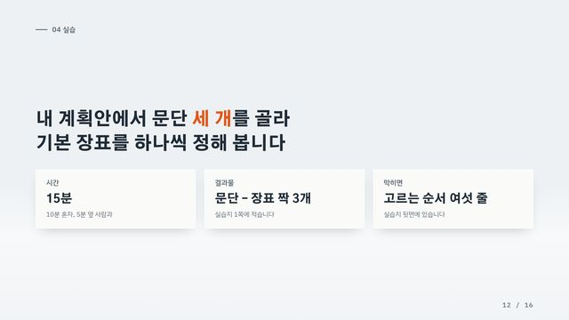
12. 할 일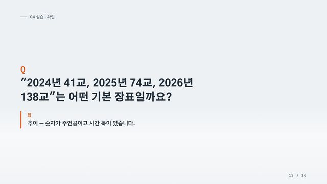
13. 질문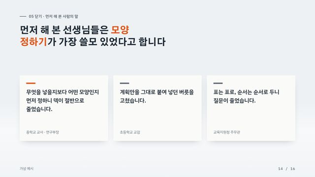
14. 인용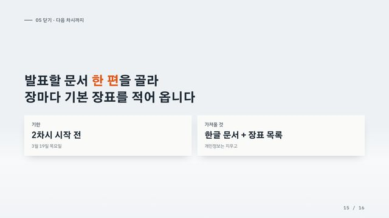
15. 할 일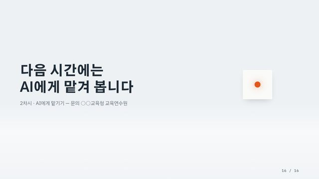
16. 맺음여러 차시 과정이면 맨 앞에 일정 장표를 과정 지도로 쓰고(차시마다 이정표 하나), 차시마다 연수 한 차시 흐름을 되풀이합니다.
기본 장표 23가지 내용의 모양으로 고릅니다. 한 장에 하나
고르는 순서 — 한 문단이 둘 이상에 맞으면 위에서부터
- 숫자가 주인공이면 수 묶음(하나면 큰 숫자, 시간 축이 있으면 추이, 합이 100%면 구성비, 나머지는 막대 비교).
- 날짜가 주인공이면 일정.
- 두 쪽이 맞서면 둘 비교, 같은 것이 달라졌으면 전→후.
- 차례가 있으면 순서·단계, 위아래가 있으면 체계, 갈래만 있으면 묶음·분류.
- 칸이 3열 이상 필요하면 표.
- 어디에도 안 맞으면 항목. 항목이 한 개면 한 문장.
뼈대
표지 cover
문서 제목 · 기관 · 날짜
- 내용 조건
- 제목 2줄 이하, 부제 1줄
- 넘치면
- 부제를 뺀다
- 부품
.cover
견본 코드
<section data-pattern="cover" class="slide cover">
<div class="c-text">
<span class="c-tag">교직원 연수 · 1차시 / 3차시 · 가상 예시</span>
<h1>AI로 발표 자료 만들기<br><em>문서를 장표로</em> 나누기</h1>
<p class="c-sub">한글 문서 한 편이 발표 덱이 되기까지</p>
</div>
<!-- 상징 부품: 7의 계열 표에서 표지 코드 -->
<p class="c-org"><span>○○교육청 교육연수원</span><span>2027. 3. 12.</span></p>
</section>참고할 변주 17개
 익숙함에 틈을 내다 #96틈이 '난다'
익숙함에 틈을 내다 #96틈이 '난다' 범 내려온다 #59웅크림·뒷발 도약·전신 신장·앞발 착지·사선과 정면의 방향 전환을 자세 원화로 연결
범 내려온다 #59웅크림·뒷발 도약·전신 신장·앞발 착지·사선과 정면의 방향 전환을 자세 원화로 연결 처마 끝 수막새 #58원근으로 물러나는 반복 사물 중 맨 앞 하나만 주인공으로 / 움직임이 끝난 뒤 지나간 자국(젖은 골·맺힌 물
처마 끝 수막새 #58원근으로 물러나는 반복 사물 중 맨 앞 하나만 주인공으로 / 움직임이 끝난 뒤 지나간 자국(젖은 골·맺힌 물 전술 자석 보드 #39포메이션 착지
전술 자석 보드 #39포메이션 착지 분광 프리즘 #37분광 목차
분광 프리즘 #37분광 목차 재생지 콜라주 #32주제와 재료가 같은 메시지를 말하는 표지(재생지로 재활용 말하기), 종이 조각 크기로 비율을 보여 주는 콜라
재생지 콜라주 #32주제와 재료가 같은 메시지를 말하는 표지(재생지로 재활용 말하기), 종이 조각 크기로 비율을 보여 주는 콜라 한 칸씩 켜지는 돔 #31사진 게이지
한 칸씩 켜지는 돔 #31사진 게이지 꺼지지 않는 창구 #30네온 점등 순서로 핵심 약속을 하나씩 켜는 표지 / 어두운 배경에서 제목을 가장 밝은 광원으로 만드는 위계
꺼지지 않는 창구 #30네온 점등 순서로 핵심 약속을 하나씩 켜는 표지 / 어두운 배경에서 제목을 가장 밝은 광원으로 만드는 위계  회전 레일 #29회전 레일 목차
회전 레일 #29회전 레일 목차 기준음 A440 #28수렴 파형
기준음 A440 #28수렴 파형 일요판 1면 약속 #27D 분위기 표지. 사진 · 연출에 기대므로 생각거리로
일요판 1면 약속 #27D 분위기 표지. 사진 · 연출에 기대므로 생각거리로 손 닿는 구명튜브 #26B 분위기 표지. 사진 · 연출에 기대므로 생각거리로
손 닿는 구명튜브 #26B 분위기 표지. 사진 · 연출에 기대므로 생각거리로 늘봄 수요 일기도 #25일기도 기호는 원래 뜻과 맞을 때만 쓴다. 전선을 연도에 붙이면 해석이 안 되므로 전선 하나를 '경계'라는
늘봄 수요 일기도 #25일기도 기호는 원래 뜻과 맞을 때만 쓴다. 전선을 연도에 붙이면 해석이 안 되므로 전선 하나를 '경계'라는  두 개의 심 #17단면으로 '둘이 하나가 됨'을 보여 주는 단일 상징 표지 + 나이테 = 연차별 성과 누적(안쪽 장표에서 나이
두 개의 심 #17단면으로 '둘이 하나가 됨'을 보여 주는 단일 상징 표지 + 나이테 = 연차별 성과 누적(안쪽 장표에서 나이 늘봄 퀘스트 일지 #9A 분위기 표지. 사진 · 연출에 기대므로 생각거리로
늘봄 퀘스트 일지 #9A 분위기 표지. 사진 · 연출에 기대므로 생각거리로 블록 빌드 유아학교 #7과제 목록을 인벤토리 핫바로, 완성률 게이지를 과제 색 구성 막대로, 스냅 가이드(점선 자리→끼움), 완성
블록 빌드 유아학교 #7과제 목록을 인벤토리 핫바로, 완성률 게이지를 과제 색 구성 막대로, 스냅 가이드(점선 자리→끼움), 완성  가온 야간편 탑승권 #4D 분위기 표지. 사진 · 연출에 기대므로 생각거리로
가온 야간편 탑승권 #4D 분위기 표지. 사진 · 연출에 기대므로 생각거리로목차 toc
문서의 큰 번호(Ⅰ · Ⅱ · Ⅲ), 차시 순서
- 내용 조건
- 3~5줄
- 넘치면
- 큰 묶음으로 합친다
- 부품
.toc+.toc-list
견본 코드
<section data-pattern="toc" class="slide toc">
<div class="s-body">
<p class="kicker">1차시 · 50분</p>
<h2 class="title">오늘의 순서</h2>
<ol class="toc-list">
<li class="is-now"><b>01</b><span>열기</span><span>5분</span></li>
<li><b>02</b><span>설명</span><span>15분</span></li>
<li><b>03</b><span>시연</span><span>10분</span></li>
<li><b>04</b><span>실습</span><span>15분</span></li>
<li><b>05</b><span>닫기</span><span>5분</span></li>
</ol>
</div>
<!-- 상징 부품: 7의 계열 표에서 목차 코드 -->
<span class="page-no"></span>
</section> 처마 막새 다섯 장 키트 #110
처마 막새 다섯 장 키트 #110 다섯 별 밤하늘 키트 #103
다섯 별 밤하늘 키트 #103 나이테 다섯 겹 키트 #91
나이테 다섯 겹 키트 #91 픽셀 게임 키트 #90
픽셀 게임 키트 #90 놀이 블록 키트 #82
놀이 블록 키트 #82 인쇄·종이 에디토리얼 키트 #62
인쇄·종이 에디토리얼 키트 #62 관측·중계 키트 #52
관측·중계 키트 #52간지 divider
큰 번호가 바뀌는 자리
- 내용 조건
- 번호 + 이름 + 한 줄
- 넘치면
- —
- 부품
.divider
견본 코드
<section data-pattern="divider" class="slide divider">
<div class="d-no"><small>SECTION</small>02</div>
<h2>설명</h2>
<p>기본 장표가 무엇인지, 어떻게 고르는지 봅니다.</p>
<!-- 상징 부품: 7의 계열 표에서 간지 코드 -->
<span class="page-no"></span>
</section>맺음 closing
문의처 · 담당 · 다음 차시 예고
- 내용 조건
- 두 줄 문장 + 연락처 한 줄
- 넘치면
- —
- 부품
.close
견본 코드
<section data-pattern="closing" class="slide close">
<h2>다음 시간에는<br>AI에게 맡겨 봅니다</h2>
<p>2차시 · AI에게 맡기기 — 문의 ○○교육청 교육연수원</p>
<!-- 상징 부품: 7의 계열 표에서 맺음 코드 -->
<span class="page-no"></span>
</section>글
한 문장 statement
목적 · 비전 · 결론처럼 한 문장이 전부인 곳
- 내용 조건
- 40자 이하 한 문장 + 받치는 말 1줄
- 넘치면
- 받치는 말을 다음 장으로
- 부품
.say— 이 장만 .title 없이 .kicker 아래에 둔다
견본 코드
<section data-pattern="statement" class="slide">
<div class="s-body">
<p class="kicker">01 열기 · 왜 배우나</p>
<div class="say fill">
<p>장표는 문서를 줄인 것이 아니라<br><em>문단마다 모양을 고른 것</em>입니다</p>
<small>모양을 먼저 정하면 꾸미는 일은 AI와 부품이 맡습니다.</small>
</div>
</div>
<span class="page-no"></span>
</section>항목 points
개조식(□ · ○ · -) 항목 3~5개, 학습 목표, 기대 효과
- 내용 조건
- 3~5개, 이름 + 설명 1~2줄(5개면 1줄)
- 넘치면
- 6개부터 두 장, 또는 묶음·분류로
- 부품
.points— 네 칸으로 한눈에 보일 때는 .brief(목적 · 대상 · 기간 · 규모)
견본 코드
<section data-pattern="points" class="slide">
<div class="s-body">
<p class="kicker">01 열기 · 학습 목표</p>
<h2 class="title">이 시간이 끝나면 <em>세 가지</em>를 할 수 있습니다</h2>
<ol class="points fill">
<li><b>문단의 모양 알아보기</b><p>문단을 읽고 항목 · 비교 · 순서 · 수 가운데 무엇인지 말한다</p></li>
<li class="is-key"><b>기본 장표 고르기</b><p>모양에 맞는 기본 장표를 고른다</p></li>
<li><b>넘치는 장 나누기</b><p>한 장에 다 안 들어가는 내용을 두 장으로 나눈다</p></li>
</ol>
</div>
<span class="page-no"></span>
</section>용어 정의 define
"○○란", 용어 풀이, 개념 설명
- 내용 조건
- 용어 1개 + 뜻 한 문장 + 예 1~2개
- 넘치면
- 용어마다 한 장
- 부품
.define
견본 코드
<section data-pattern="define" class="slide">
<div class="s-body">
<p class="kicker">02 설명 · 용어</p>
<h2 class="title">먼저 <em>기본 장표</em>라는 말부터 맞춥니다</h2>
<dl class="define fill">
<dt>기본 장표<small>내용의 모양에 따른 장표 틀</small></dt>
<dd>
<p>행사가 아니라 내용의 모양으로 나눈, 한 장짜리 장표의 틀입니다.</p>
<ul><li>개조식 항목 세 개 → 항목 장표</li><li>문제점과 개선 방안 → 둘 비교 장표</li></ul>
</dd>
</dl>
</div>
<span class="page-no"></span>
</section>인용 quote
참여자 말 · 설문 서술 답 · 법령 조문
- 내용 조건
- 1~3개, 각 60자 이하, 말한 사람
- 넘치면
- 가장 강한 것 하나만
- 부품
.quote
견본 코드
<section data-pattern="quote" class="slide">
<div class="s-body">
<p class="kicker">05 닫기 · 먼저 해 본 사람의 말</p>
<h2 class="title">먼저 해 본 선생님들은 <em>모양 정하기</em>가 가장 쓸모 있었다고 합니다</h2>
<div class="quote fill">
<figure class="is-key"><blockquote>무엇을 넣을지보다 어떤 모양인지 먼저 정하니 덱이 절반으로 줄었습니다.</blockquote><figcaption>중학교 교사 · 연구부장</figcaption></figure>
<figure><blockquote>계획안을 그대로 붙여 넣던 버릇을 고쳤습니다.</blockquote><figcaption>초등학교 교감</figcaption></figure>
<figure><blockquote>표는 표로, 순서는 순서로 두니 질문이 줄었습니다.</blockquote><figcaption>교육지원청 주무관</figcaption></figure>
</div>
</div>
<p class="src">가상 예시</p>
<span class="page-no"></span>
</section>관계
순서·단계 steps
절차 · 신청 방법 · 따라 하기 · 단계별 추진 · 향후 계획
- 내용 조건
- 3~4단계, 단계마다 이름 + 할 일 3줄 이하
- 넘치면
- 5단계부터 두 장
- 부품
.road
견본 코드
<section data-pattern="steps" class="slide">
<div class="s-body">
<p class="kicker">03 시연 · 따라 하기</p>
<h2 class="title">문단 하나를 장표로 옮기는 <em>세 걸음</em></h2>
<div class="road fill">
<div class="is-key"><h3><small>1</small>모양 정하기</h3><ul><li>숫자 · 날짜가 주인공인가</li><li>두 쪽이 맞서는가</li><li>차례가 있는가</li></ul></div>
<div><h3><small>2</small>줄이기</h3><ul><li>제목은 결론 한 문장</li><li>항목은 다섯 개까지</li><li>넘치면 두 장으로</li></ul></div>
<div><h3><small>3</small>강조 하나</h3><ul><li>가장 중요한 한 곳만</li><li>제목 낱말 또는 칸 하나</li><li>나머지는 그대로</li></ul></div>
</div>
</div>
<span class="page-no"></span>
</section> 날짜 비례 레인 #84
날짜 비례 레인 #84 다섯 칸 다이얼 #22
다섯 칸 다이얼 #22둘 비교 compare
문제점 ↔ 개선 방안, 문단 ↔ 고른 장표, 기존안 ↔ 새 안
- 내용 조건
- 2~3줄, 줄마다 왼쪽 · 오른쪽 한 짝
- 넘치면
- 4줄부터 두 장
- 부품
.fix(+.stack) — 누를 때마다 한 줄씩 보이려면 data-step
견본 코드
<section data-pattern="compare" class="slide" data-steps="2">
<div class="s-body">
<p class="kicker">02 설명 · 예시</p>
<h2 class="title">같은 문단도 <em>모양을 고르면</em> 한눈에 읽힙니다</h2>
<div class="fill stack">
<div class="fix" data-step="1"><p class="q"><b>문서의 문단</b>신청은 3월 접수, 4월 심사, 5월 선정 통보 순으로 진행한다</p><i aria-hidden="true"></i><p class="a"><b>고른 장표</b>순서 · 단계 — 세 단계를 화살 띠로</p></div>
<div class="fix is-key" data-step="2"><p class="q"><b>문서의 문단</b>현행은 학교가 따로 계약하나, 개선안은 교육청이 한꺼번에 계약한다</p><i aria-hidden="true"></i><p class="a"><b>고른 장표</b>전 → 후 — 같은 줄에 나란히</p></div>
</div>
</div>
<span class="page-no"></span>
</section> 현안·해결 줄 맞춤 비교 #121
현안·해결 줄 맞춤 비교 #121 네 군데 끊는 고리 #115
네 군데 끊는 고리 #115 원인으로 모이는 선 #94
원인으로 모이는 선 #94 줄마다 짝 #83
줄마다 짝 #83 주 담당 대응표 #61
주 담당 대응표 #61 원인 꽂힌 화살표 #55
원인 꽂힌 화살표 #55전→후 before-after
현행 → 개선, 사업 전 → 사업 후(숫자가 있는 짝)
- 내용 조건
- 2~3짝, 같은 기준 · 같은 단위
- 넘치면
- 가장 큰 변화 3짝만
- 부품
.ba(+.ba-head)
견본 코드
<section data-pattern="before-after" class="slide">
<div class="s-body">
<p class="kicker">03 핵심 성과</p>
<h2 class="title">참여 뒤, <em>학교 밖 수업을 계획한 학교</em>가 두 배로 늘었습니다</h2>
<div class="fill stack">
<p class="ba-head"><span>사업 전(2025)</span><span>사업 후(2026)</span></p>
<div class="ba">
<div><span>학교 밖 수업을 계획한 학교</span><p>참여교 중</p><b>31<small>%</small></b></div><i aria-hidden="true"></i><div class="is-key"><span>학교 밖 수업을 계획한 학교</span><p>참여교 중</p><b>64<small>%</small></b></div>
<div><span>교사 1명당 연계 수업</span><p>한 해</p><b>1.4<small>회</small></b></div><i aria-hidden="true"></i><div><span>교사 1명당 연계 수업</span><p>한 해</p><b>3.2<small>회</small></b></div>
<div><span>예술가와 수업해 본 교사</span><p>참여교 교사 중</p><b>18<small>%</small></b></div><i aria-hidden="true"></i><div><span>예술가와 수업해 본 교사</span><p>참여교 교사 중</p><b>47<small>%</small></b></div>
</div>
</div>
</div>
<p class="src">교사 설문 412명(가상 예시)</p>
<span class="page-no"></span>
</section>참고할 변주 1개
 줄어드는 공정 띠 #76
줄어드는 공정 띠 #76묶음·분류 groups
과제 · 프로그램을 갈래로 나눈 것
- 내용 조건
- 2~4묶음, 묶음마다 3줄 이하
- 넘치면
- 묶음마다 한 장
- 부품
.card+.grid.g2/.g3/.g4
견본 코드
<section data-pattern="groups" class="slide">
<div class="s-body">
<p class="kicker">03 세부 추진 과제</p>
<h2 class="title">여섯 과제 중 <em>이동 지원</em> 둘은 상반기에 끝냅니다</h2>
<div class="grid g3 fill center">
<div class="card is-key"><span class="c-no">묶음 1 · 이동</span><h3>찾아가는 교실</h3><p>예술 공간 버스 운영<br>군 지역 거점 지정</p><p class="c-foot">기한 <b>6월</b></p></div>
<div class="card"><span class="c-no">묶음 2 · 수업</span><h3>함께 짜는 수업</h3><p>공동 설계 연수<br>학년별 수업 모델 개발</p><p class="c-foot">기한 <b>10월</b></p></div>
<div class="card"><span class="c-no">묶음 3 · 행정</span><h3>한 번에 하는 행정</h3><p>이동 · 보험 일괄 계약<br>신청 서류 줄이기</p><p class="c-foot">기한 <b>3월</b></p></div>
</div>
</div>
<span class="page-no"></span>
</section> 위험도 세 묶음 카드 #119
위험도 세 묶음 카드 #119 네 칸 이관표 #87
네 칸 이관표 #87체계 tree
비전 → 전략 → 과제, 추진 체계, 조직도
- 내용 조건
- 맨 위 1 + 갈래 2~4 + 갈래마다 2~3줄
- 넘치면
- 갈래마다 한 장, 또는 표로
- 부품
.tree— 갈래 수는 style="--n:3"
견본 코드
<section data-pattern="tree" class="slide">
<div class="s-body">
<p class="kicker">02 목표 · 추진 체계</p>
<h2 class="title">세 전략 가운데 <em>찾아가는 교실</em>에 먼저 힘을 싣습니다</h2>
<div class="tree fill" style="--n:3">
<div class="t-top"><small>목표</small>어느 학교에서든 30분 안에 닿는 학교 밖 교실</div>
<div class="t-mid is-key"><small>전략 1</small>찾아가는 교실</div>
<div class="t-mid"><small>전략 2</small>함께 짜는 수업</div>
<div class="t-mid"><small>전략 3</small>한 번에 하는 행정</div>
<ul><li>예술 공간 버스 2대</li><li>군 지역 거점 6곳</li></ul>
<ul><li>공동 설계 연수 연 4회</li><li>학년별 수업 모델</li></ul>
<ul><li>이동 · 보험 일괄 계약</li><li>신청 서류 한 장으로</li></ul>
</div>
</div>
<span class="page-no"></span>
</section>참고할 변주 8개
 생애 단계 열 체계도 #114
생애 단계 열 체계도 #114 허리 좁은 배경표 #97
허리 좁은 배경표 #97 줄 맞춘 연차 체계도 #93
줄 맞춘 연차 체계도 #93 층위 표 체계도 #85
층위 표 체계도 #85 한 줄로 읽는 체계도 #73
한 줄로 읽는 체계도 #73 예산 각도 동심원 체계도 #57
예산 각도 동심원 체계도 #57 나비매듭 배경·목적 #56
나비매듭 배경·목적 #56 기둥과 보 체계도 #54
기둥과 보 체계도 #54수
큰 숫자 numbers
핵심 실적 · 규모 · 예산 총액
- 내용 조건
- 1~4개, 숫자마다 단위 + 한 줄
- 넘치면
- 가장 중요한 3개만
- 부품
.tile(+.delta)
견본 코드
<section data-pattern="numbers" class="slide">
<div class="s-body">
<p class="kicker">03 핵심 성과</p>
<h2 class="title">참여 학교 <em>138교</em>, 연계 수업 1,240회가 열렸습니다</h2>
<div class="grid g4 fill center">
<div class="tile is-key"><span>참여 학교</span><b>138<small>교</small></b><span class="delta">▲ 64교</span><p>2025 시범 대비</p></div>
<div class="tile"><span>연계 수업</span><b>1,240<small>회</small></b><span class="delta">▲ 702회</span><p>2025 시범 대비</p></div>
<div class="tile"><span>참여 학생</span><b>2.1<small>만 명</small></b><span class="delta">▲ 1.2만 명</span><p>2025 시범 대비</p></div>
<div class="tile"><span>예술 공간</span><b>46<small>곳</small></b><span class="delta">▲ 19곳</span><p>2025 시범 대비</p></div>
</div>
</div>
<p class="src">자료: ○○교육청 운영 실적(가상 예시)</p>
<span class="page-no"></span>
</section> 판심 대조 지표 #95
판심 대조 지표 #95 백 칸 중 마흔하나 #80
백 칸 중 마흔하나 #80막대 비교 bars
항목 간 크기 비교 · 순위 · 목표 대비 실적
- 내용 조건
- 3~5줄, 한 가지 단위
- 넘치면
- 위 4개 + 나머지 합
- 부품
.goal+.g-row— 목표선이 없으면 .bars + .bar
견본 코드
<section data-pattern="bars" class="slide">
<div class="s-body">
<p class="kicker">03 핵심 성과</p>
<h2 class="title">네 지표 중 셋은 목표를 넘었고, <em>예술 공간</em>은 92%입니다</h2>
<div class="goal fill">
<div class="g-row" style="--v:88.5;--t:76.9"><span>참여 학교</span><i></i><b>115%<small>138 / 120교</small></b></div>
<div class="g-row" style="--v:95.4;--t:76.9"><span>연계 수업</span><i></i><b>124%<small>1,240 / 1,000회</small></b></div>
<div class="g-row" style="--v:80.8;--t:76.9"><span>참여 학생</span><i></i><b>105%<small>2.1 / 2만 명</small></b></div>
<div class="g-row is-key" style="--v:70.8;--t:76.9"><span>예술 공간</span><i></i><b>92%<small>46 / 50곳</small></b></div>
<p class="g-key"><span><i class="v"></i>달성률</span><span><i class="t"></i>목표(100%)</span></p>
</div>
</div>
<p class="src">자료: ○○교육청 운영 실적(가상 예시)</p>
<span class="page-no"></span>
</section> 배정 칸 붙은 순위표 #111
배정 칸 붙은 순위표 #111 지표 상태창 #78
지표 상태창 #78 기준선 격차 배경·목적 #77
기준선 격차 배경·목적 #77 확대 지시선 배경·목적 #72
확대 지시선 배경·목적 #72 낱칸 시·군 지도 #51
낱칸 시·군 지도 #51 조사 완료선 정렬 비교 #49
조사 완료선 정렬 비교 #49 예산집행 레이스 #20
예산집행 레이스 #20추이 trend
여러 해 · 여러 달에 걸친 변화
- 내용 조건
- 3~8시점, 한 가지 값
- 넘치면
- 시점을 줄인다
- 부품
.trend— 가장 큰 값 = --v:100
견본 코드
<section data-pattern="trend" class="slide">
<div class="s-body">
<p class="kicker">01 추진 배경</p>
<h2 class="title">참여 학교는 4년 새 <em>여섯 배</em>로 늘었습니다</h2>
<div class="trend fill">
<div style="--v:17"><b>23<small>교</small></b><i></i><span>2023</span></div>
<div style="--v:30"><b>41<small>교</small></b><i></i><span>2024</span></div>
<div style="--v:54"><b>74<small>교</small></b><i></i><span>2025</span></div>
<div class="is-key" style="--v:100"><b>138<small>교</small></b><i></i><span>2026</span></div>
</div>
</div>
<p class="src">자료: ○○교육청 운영 실적(가상 예시)</p>
<span class="page-no"></span>
</section> 곱셈 줄 붙은 겸용 차트 #118
곱셈 줄 붙은 겸용 차트 #118 같은 출발 100 #88
같은 출발 100 #88 세 줄 나란히 추이 #48
세 줄 나란히 추이 #48 타이밍 타워 순위표 #41
타이밍 타워 순위표 #41구성비 share
전체 중 몫 · 재원 비율
- 내용 조건
- 2~5조각, 합 100%
- 넘치면
- 작은 조각은 기타로
- 부품
.share+.sh-bar— 설문 다섯 단계 응답은 .likert
견본 코드
<section data-pattern="share" class="slide">
<div class="s-body">
<p class="kicker">04 일정 · 예산</p>
<h2 class="title">재원의 <em>45%</em>는 교육청 자체 예산으로 맡습니다</h2>
<div class="share fill">
<div class="sh-bar"><i class="is-key" style="--v:45"></i><i style="--v:30"></i><i style="--v:25"></i></div>
<ul>
<li class="is-key"><span>교육청 자체</span><b>45<small>%</small></b><p>5.4억 원 · 이동 지원 전액</p></li>
<li><span>국고 보조</span><b>30<small>%</small></b><p>3.6억 원 · 수업 운영</p></li>
<li><span>지자체 대응</span><b>25<small>%</small></b><p>3.0억 원 · 계약 · 보험</p></li>
</ul>
</div>
</div>
<p class="src">자료: ○○교육청 2027 예산안(가상 예시)</p>
<span class="page-no"></span>
</section> 경계선 이은 100% 막대 #120
경계선 이은 100% 막대 #120 원인으로 다시 모은 칸 #112
원인으로 다시 모은 칸 #112 펼친 조각 구성비 #89
펼친 조각 구성비 #89 이어지는 재원 비중 #79
이어지는 재원 비중 #79 재원 지분 마리메코 #50
재원 지분 마리메코 #50표 table
표로 된 지원 내용 · 항목 목록 · 예산 내역
- 내용 조건
- 3~5행 × 3~4열, 칸마다 1줄
- 넘치면
- 6행부터 두 장, 또는 핵심 열만
- 부품
.tbl
견본 코드
<section data-pattern="table" class="slide">
<div class="s-body">
<p class="kicker">04 일정 · 예산</p>
<h2 class="title">총 12억 원 가운데 <em>이동 지원</em>에 5.4억 원을 씁니다</h2>
<div class="fill stack">
<table class="tbl">
<thead><tr><th>묶음</th><th>주요 내용</th><th>2026</th><th>2027</th></tr></thead>
<tbody>
<tr class="is-key"><td>이동</td><td>버스 2대 · 거점 6곳</td><td class="n">1.8억</td><td class="n">5.4억</td></tr>
<tr><td>수업</td><td>설계 연수 · 수업 모델</td><td class="n">3.1억</td><td class="n">3.6억</td></tr>
<tr><td>행정</td><td>일괄 계약 · 보험</td><td class="n">1.9억</td><td class="n">3.0억</td></tr>
</tbody>
<tfoot><tr><td>합계</td><td></td><td class="n">6.8억</td><td class="n">12.0억</td></tr></tfoot>
</table>
</div>
</div>
<p class="src">자료: ○○교육청 2027 예산안(가상 예시)</p>
<span class="page-no"></span>
</section> 옮겨 간 칸 분담표 #113
옮겨 간 칸 분담표 #113 세 단계 지원 목록창 #92
세 단계 지원 목록창 #92 판본 목록표 #81
판본 목록표 #81 밑줄 대조표 #53
밑줄 대조표 #53 눈금 머리 과제표 #47
눈금 머리 과제표 #47시간
일정 timeline
추진 일정 · 연혁 · 과정 지도
- 내용 조건
- 이정표 3~5개(.mile) 또는 줄 3~5개 × 12달(.gantt)
- 넘치면
- 분기 · 학기로 묶는다
- 부품
.mile— 달 단위 기간이 겹치면 .gantt
견본 코드
<section data-pattern="timeline" class="slide">
<div class="s-body">
<p class="kicker">과정 지도</p>
<h2 class="title">세 차시 가운데 오늘은 <em>문서를 나누는 법</em>을 익힙니다</h2>
<ol class="mile fill">
<li class="is-key"><time>1차시</time><b>문서를 장표로 나누기</b><p>문단마다 모양을 고른다</p></li>
<li><time>2차시</time><b>AI에게 맡기기</b><p>주소와 문서를 주고 덱을 받는다</p></li>
<li><time>3차시</time><b>고쳐서 발표하기</b><p>숫자를 대조하고 다듬는다</p></li>
</ol>
</div>
<span class="page-no"></span>
</section> 열두 달 고리 #86
열두 달 고리 #86 주 경로 간트 #23
주 경로 간트 #23그림
사진+글 photo
사례 · 현장 사진 · 활동 모습
- 내용 조건
- 사진 1~3장, 사진마다 제목 + 한 줄 + 말 한마디
- 넘치면
- 사진마다 한 장
- 부품
.case+.ph— 사진은 사용자에게 받는다. 없으면 .ph data-need 로 자리만
견본 코드
<section data-pattern="photo" class="slide">
<div class="s-body">
<p class="kicker">04 우수 사례</p>
<h2 class="title">세 학교는 <em>교과 시간 안에서</em> 학교 밖 수업을 정례화했습니다</h2>
<div class="case fill">
<div><div class="ph" data-need="사진 자리 · 4:3 · 공방에서 도자기를 빚는 초등학생"></div><div class="c-body"><span>○○초 · 5학년 미술</span><b>공방에서 빚은 도자기로 학년 전시</b><blockquote>흙을 직접 만져 보니 교과서 사진이 달라 보였어요.<cite>5학년 학생</cite></blockquote></div></div>
<div class="is-key"><div class="ph" data-need="사진 자리 · 4:3 · 극장 무대에서 낭독하는 중학생"></div><div class="c-body"><span>△△중 · 2학년 국어</span><b>극장 무대에서 낭독극 발표</b><blockquote>무대에 서 보니 글을 읽는 목소리가 달라졌어요.<cite>2학년 학생</cite></blockquote></div></div>
<div><div class="ph" data-need="사진 자리 · 4:3 · 오케스트라와 함께 연주하는 초등학생"></div><div class="c-body"><span>□□초 · 4학년 음악</span><b>지역 오케스트라와 합동 연주</b><blockquote>아이들이 처음으로 진짜 악기 소리를 가까이에서 들었습니다.<cite>담당 교사</cite></blockquote></div></div>
</div>
</div>
<span class="page-no"></span>
</section>화면 짚기 screen
프로그램 화면 · 서식 · 누리집 사용법
- 내용 조건
- 캡처 1장 + 번호 표시 3개 이하
- 넘치면
- 동작 하나에 한 장
- 부품
.shot+.shot-img— 번호 자리는 style="--x:%;--y:%"
견본 코드
<section data-pattern="screen" class="slide">
<div class="s-body">
<p class="kicker">03 시연 · 화면 짚기</p>
<h2 class="title">대화창에는 <em>주소와 문서</em> 두 가지만 넣습니다</h2>
<div class="shot fill">
<div class="shot-img"><div class="ph" data-need="화면 캡처 자리 · 16:10 · 채팅 AI 대화창에 주소와 한글 문서를 넣은 모습"></div><b style="--x:22;--y:78">1</b><b class="is-key" style="--x:52;--y:78">2</b><b style="--x:90;--y:78">3</b></div>
<ol>
<li><b>문서 올리기</b><span>클립 단추로 한글 문서를 첨부</span></li>
<li class="is-key"><b>주소 붙이기</b><span>디자인 레퍼런스 주소를 그대로</span></li>
<li><b>보내기</b><span>구성안이 먼저 나옵니다</span></li>
</ol>
</div>
</div>
<span class="page-no"></span>
</section>청중에게
질문 ask
여는 질문 · 토의 주제 · 퀴즈 · 자주 묻는 질문
- 내용 조건
- 질문 1개 + 보기 4개 이하(ol) 또는 답 1개(.a-a)
- 넘치면
- 질문마다 한 장
- 부품
.ask— 퀴즈 답은 .a-a 에 data-step="1" 을 붙여 가렸다 연다. 이 장은 .title 없이
견본 코드
<section data-pattern="ask" class="slide">
<div class="s-body">
<p class="kicker">01 열기 · 여는 질문</p>
<div class="ask fill">
<p class="a-q">발표 자료를 만들 때 가장 오래 걸리는 일은 무엇인가요?</p>
<ol>
<li>문서에서 넣을 내용 고르기</li>
<li>어떤 모양으로 보여 줄지 정하기</li>
<li>색 · 글꼴 · 줄 맞추기</li>
<li>그림 · 사진 찾기</li>
</ol>
</div>
</div>
<span class="page-no"></span>
</section><section data-pattern="ask" class="slide" data-steps="1">
<div class="s-body">
<p class="kicker">04 실습 · 확인</p>
<div class="ask fill">
<p class="a-q">"2024년 41교, 2025년 74교, 2026년 138교"는 어떤 기본 장표일까요?</p>
<p class="a-a" data-step="1"><b>답</b>추이 — 숫자가 주인공이고 시간 축이 있습니다.</p>
</div>
</div>
<span class="page-no"></span>
</section>할 일 todo
실습 안내 · 과제 · 제출 서류 · 신청 기한
- 내용 조건
- 할 일 한 문장 + 조건 칸 2~3개(시간 · 결과물 · 도움)
- 넘치면
- 할 일마다 한 장
- 부품
.todo— 이 장은 .title 없이
견본 코드
<section data-pattern="todo" class="slide">
<div class="s-body">
<p class="kicker">04 실습</p>
<div class="todo fill">
<p class="t-do">내 계획안에서 문단 <em>세 개</em>를 골라<br>기본 장표를 하나씩 정해 봅니다</p>
<dl>
<div><dt>시간</dt><dd>15분<small>10분 혼자, 5분 옆 사람과</small></dd></div>
<div><dt>결과물</dt><dd>문단 – 장표 짝 3개<small>실습지 1쪽에 적습니다</small></dd></div>
<div><dt>막히면</dt><dd>고르는 순서 여섯 줄<small>실습지 뒷면에 있습니다</small></dd></div>
</dl>
</div>
</div>
<span class="page-no"></span>
</section>HTML 뼈대와 상징 부품 AI가 덱을 쓸 때 그대로 가져다 씁니다
6. HTML 뼈대
<!DOCTYPE html>
<html lang="ko" data-kit="{계열}">
<head>
<meta charset="utf-8">
<meta name="viewport" content="width=device-width,initial-scale=1">
<title>발표 제목</title>
<!-- 이 계열의 공통 CSS(글꼴 · 색 · 부품). 주소를 바꾸지 마세요 -->
<link rel="stylesheet" href="https://szxv7704-dot.github.io/design-reference-gallery/kit/v1/{계열}.css">
<style>
/* === 추가 부품: 새 클래스가 꼭 필요할 때만 이 줄 아래에(토큰 변수만 사용) === */
</style>
</head>
<body>
<div class="deck"><main class="deck-stage">
<!-- 여기에 <section class="slide"> 를 장 수만큼 -->
</main></div>
<!-- 동작 엔진. 주소를 바꾸지 마세요 -->
<script src="https://szxv7704-dot.github.io/design-reference-gallery/kit/v1/deck.js"></script>
</body>
</html>{계열}두 곳을 A · B · C · D 중 하나로 바꿉니다.- 열 때 인터넷이 필요합니다. AI 화면 안 미리보기에서 색 · 모양이 안 보여도 고치지 마세요(바깥 파일을 막는 미리보기가 있습니다). 내려받아 브라우저로 열면 정상입니다.
7. 상징 부품 (표지 · 목차 · 간지 · 맺음에 넣는 계열의 얼굴)
견본 코드(8)의 <!-- 상징 부품 --> 자리에 고른 계열의 코드를 넣습니다. 아래는 섹션이 5개이고 지금 2섹션일 때입니다. 칸(<i>) 수 = 섹션 수(5개까지).
| 계열 | 표지 | 목차(지금 2섹션) | 간지(지금 2섹션) | 맺음 |
|---|---|---|---|---|
| A | <div class="prog" aria-hidden="true"><i></i><i></i><i></i><i></i><i></i></div> | <div class="prog" aria-hidden="true"><i></i><i class="next"></i><i></i><i></i><i></i></div> | <div class="prog" aria-hidden="true"><i class="done"></i><i class="now"></i><i></i><i></i><i></i></div> | <div class="prog" aria-hidden="true"><i class="done"></i><i class="done"></i><i class="done"></i><i class="done"></i><i class="done"></i></div> |
| B | <div class="mass" aria-hidden="true"><i></i><i></i><i class="lit"></i><i></i><i></i></div> | <div class="mass" aria-hidden="true"><i></i><i class="lit"></i><i></i><i></i><i></i></div> | <div class="mass" aria-hidden="true"><i></i><i class="lit"></i><i></i><i></i><i></i></div> | <div class="spot" aria-hidden="true"></div> |
| C | <div class="blocks" aria-hidden="true"><i></i><i></i><i></i><i></i><i></i></div> | <div class="blocks" aria-hidden="true"><i></i><i class="now"></i><i></i><i></i><i></i></div> | <div class="blocks" aria-hidden="true"><i></i><i class="now"></i><i class="ghost"></i><i class="ghost"></i><i class="ghost"></i></div> | <div class="blocks flag" aria-hidden="true"><i></i><i></i><i></i><i></i><i></i></div> |
| D | <div class="reg" aria-hidden="true"><b>2027</b></div> | <div class="reg" aria-hidden="true"><b>02</b></div> | <div class="reg is-off" aria-hidden="true"><b>02</b><i class="crop"></i></div> | <div class="reg" aria-hidden="true"><b>끝</b></div> |
- A: 진행 칸(
.prog)을 씁니다. 칸 수 = 섹션 수, 목차는 다음 칸.next, 간지는 지난 칸.done· 지금 칸.now, 맺음은 모두.done. - B: 모형대 매스(
.mass)를 씁니다. 목차 · 간지의.lit층 = 지금 섹션(아래층이 1섹션). 맺음은.spot. - C: 블록 탑(
.blocks)을 씁니다. 블록 수 = 섹션 수(아래가 1섹션), 간지는 지금 층까지만 놓고 남은 층은.ghost, 맺음은.flag. - D: 판 번호(
.reg)를 씁니다. 큰 명조 숫자 하나에 주홍 판이 4px 어긋나는 곳은 덱 전체에서 간지뿐, 재단 표시(.crop)도 간지에만.
9. 출력과 점검
- 결과는
.html파일 하나(UTF-8)로 줍니다. 파일을 만들 수 있는 기능(아티팩트 · 캔버스 · 파일 첨부)이 있으면 그것으로, 없을 때만 HTML 전체를 코드 블록 하나로 출력합니다. ..., "(생략)", "(이하 동일)"을 쓰지 않습니다.<!DOCTYPE html>부터</html>까지 전부 씁니다.
내보내기 전에 하나씩 확인합니다.
- 문서에 없고 확인도 받지 않은 숫자 · 사실이 없는가? 수치가 있는 장마다
.src가 있는가? - 장마다 기본 장표가 하나이고, 내용 조건(항목 수 · 줄 수)을 넘지 않는가?
- 제목이 결론 한 문장이고 두 줄 이내인가? 강조(
<em>·.is-key)가 장마다 한 곳인가? - 쓴 클래스가 모두 견본 코드(8) 또는 '추가 부품' 칸에 있는가? 인라인 style은 허용된 값뿐인가? 코드로 그린 그림이 없는가?
- 공통 파일 두 줄이 그대로이고, 장 번호 · 쪽 표시를 손으로 쓰지 않았는가?
- 견본의 예시 문구가 남아 있지 않은가? 생략 없이 끝까지 썼는가?
- 사진 · 캡처 자리(
data-need)가 있으면, 어떤 이미지가 필요한지 사용자에게 목록으로 알려 주었는가?
참고 서랍 덱에 조립하는 재료가 아닙니다. AI는 건너뛰어도 됩니다
영감 31개 — 눌러서 조작하는 표지 · 재질 질감 · 자체 진행 방식
 피사체는 그대로, 시선은 새로 #109
피사체는 그대로, 시선은 새로 #109 내가 보이시나요? #108
내가 보이시나요? #108 새로운 일상이 도착했습니다 #106
새로운 일상이 도착했습니다 #106 익숙함에 틈을 내다 #102
익숙함에 틈을 내다 #102 빙산 아래로 #101
빙산 아래로 #101 길 따라 연수 일정 #100
길 따라 연수 일정 #100 빛나는 단어 더미 #99
빛나는 단어 더미 #99 여섯 장면 미술관 #98
여섯 장면 미술관 #98 체험의 숲 #75
체험의 숲 #75 별을 잇다 #74
별을 잇다 #74 미래교육 설계도 #71
미래교육 설계도 #71 분자 결합 추진체계 #44
분자 결합 추진체계 #44 칸막이 벤토 상자 #43
칸막이 벤토 상자 #43 도미노 일정표 #40
도미노 일정표 #40 열섬 육각 지형 #38
열섬 육각 지형 #38 유지선을 넘는 유리 적층 #36
유지선을 넘는 유리 적층 #36 세로 스와이프 카드 #35
세로 스와이프 카드 #35 허브 내비게이션 업무보고 #34
허브 내비게이션 업무보고 #34 쪼개지는 예산 사각형 #33
쪼개지는 예산 사각형 #33 같은 사물, 아이의 눈 #24
같은 사물, 아이의 눈 #24 세 겹의 체 #21
세 겹의 체 #21 화이트 단지 모형 #19
화이트 단지 모형 #19 함께 도는 궤도 #18
함께 도는 궤도 #18 연수 배선반 #15
연수 배선반 #15 상세도 호출 #14
상세도 호출 #14 던져 채우는 오후표 #13
던져 채우는 오후표 #13 협력 항로 해도 #12
협력 항로 해도 #12 디딤 타워 #11
디딤 타워 #11 안개 걷는 영토도 #10
안개 걷는 영토도 #10 세 겹 병풍 #8
세 겹 병풍 #8 딜러의 세 더미 #6
딜러의 세 더미 #6인쇄 · 홍보물 11개 — 포스터 · 리플렛 · 소식지(16:9 덱이 아님)
 방해해도 좋습니다 #107
방해해도 좋습니다 #107 오늘 밤, 한 판 #105
오늘 밤, 한 판 #105 발견 영수증 #104
발견 영수증 #104 모아 · 앱 장터 #70
모아 · 앱 장터 #70 동료의 도구함 #69
동료의 도구함 #69 픽셀 작업실 #68
픽셀 작업실 #68 AFTER HOURS #67
AFTER HOURS #67 동네일보 #66
동네일보 #66 함께 한 1년 #65
함께 한 1년 #65 TOOL MARKET #64
TOOL MARKET #64 업무도구 자판기 #63
업무도구 자판기 #63제작 기준에 걸려 숨긴 장표 7개(#16 · #42 · #45 · #46 · #60 · #116 · #117)는 목록에서 뺐습니다. 분류 틀은 기본 장표 틀, 판정은 판정표, 만드는 규칙은 제작 기준.